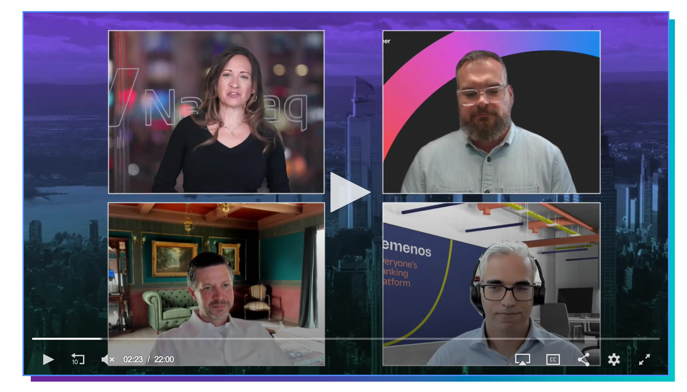

Featured · Adaptive Compliance
Why compliance must adapt.
A concise introduction to the operating model behind the eight-volume series: continuous intelligence, model governance, accountable AI and human judgment.
Interviews, panels, podcasts and published perspectives on payments, sanctions, financial crime and artificial intelligence.
A concise introduction to the operating model behind the eight-volume series: continuous intelligence, model governance, accountable AI and human judgment.
Selected video conversations on how modern compliance, artificial intelligence and digital identity are changing financial services.

A discussion on applying AI and machine learning to fraud detection, payments risk management and financial-crime controls.
Micheal discusses how biometrics, automation and modern compliance technology can reduce friction, strengthen security and support cross-border commerce between East and West.
Watch the interview ↗Perspectives on sanctions, KYC, cross-border payments, financial crime technology and compliance leadership.
A profile on building a culture of integrity, earning employee trust, aligning compliance with strategic goals and enabling sustainable growth.
Read the profile ↗Responding to rapidly evolving sanctions, supporting Ukrainian businesses and adapting controls to geopolitical change.
Read the interview ↗Modernizing transaction monitoring and using machine learning to respond to changing risk.
Watch the video ↗North Korean IT-worker schemes, resilient KYC, public-private cooperation and adaptive financial-crime controls.
Read the article ↗Multijurisdictional KYC, local expertise and globally consistent compliance programs.
Read the report ↗Global KYC complexity, real-time prevention, digital identity and biometrics.
Listen and read ↗Cross-border commerce, multi-currency payments, APP fraud and why technology, cost and speed shape the customer experience.
Read the interview ↗Biometrics, real-time fraud detection, transparency and minimizing unnecessary customer friction.
Read the long read ↗Micheal discusses the move from fragmented compliance tools toward unified platforms managing the complete customer, risk and compliance lifecycle.
For interviews, podcasts, panels, commentary and executive discussions on payments, compliance, financial crime and artificial intelligence.